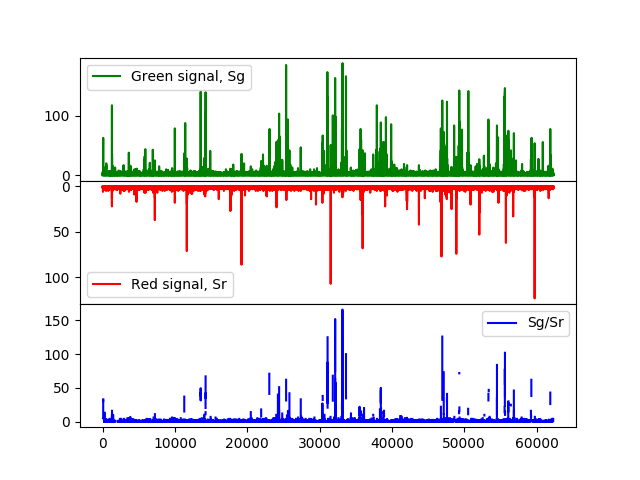

Note
Click here to download the full example code
Intensity traces¶
The function tttrlib.intensity_trace can be applied to a sequences of event
times traces to calculate the time-dependent counts for a given time window size.
In single-molecule FRET experiments such traces are particularly useful to illustrate
single-molecule bursts. The function takes an array of macro times as an input
the macro times are binned and the counts per bin are returned.
#.. plot:: ../examples/single_molecule/single_molecule_mcs.py
Above, for a donor and acceptor detection channel a histogram trace for is shown in green and red.
There are two options to compute intensity traces. Intensity traces can either be
computed using the function tttrlib.compute_intensity_trace or using the method
intensity_trace of a TTTR object.
tttr_object = tttrlib.TTTR('../../test/data/bh/bh_spc132.spc', 'SPC-130')
# option 1
tttr_object = tttrlib.compute_intensity_trace(
data.macro_times,
time_window_length=1.0, # this is one millisecond
macro_time_resolution=data.get_header().macro_time_resolution / 1e6
)
# option 2
tttr_object = data.intensity_trace(
time_window_length=1.0, # this is one millisecond
)
When the first option is used, a calibration for the macro time array needs to be
provided. If the second option is used, the macro time calibration of the header
information that was processes from the tttr file when the TTTR object was
created is already considered. The time window length are in units of milli seconds.

Out:
/home/travis/build/Fluorescence-Tools/tttrlib/examples/single_molecule/plot_single_molecule_mcs.py:64: RuntimeWarning: divide by zero encountered in true_divide
SgSr_ratio = (green_trace[:m] / red_trace[:m])
/home/travis/build/Fluorescence-Tools/tttrlib/examples/single_molecule/plot_single_molecule_mcs.py:64: RuntimeWarning: invalid value encountered in true_divide
SgSr_ratio = (green_trace[:m] / red_trace[:m])
/home/travis/build/Fluorescence-Tools/tttrlib/examples/single_molecule/plot_single_molecule_mcs.py:65: RuntimeWarning: invalid value encountered in multiply
SgSr_ratio[np.where((green_trace[:m] + red_trace[:m]) < 2)] *= 0
import pylab as p
import numpy as np
import tttrlib
data = tttrlib.TTTR('../../test/data/bh/bh_spc132.spc', 'SPC-130')
mt = data.get_macro_time()
green_indeces = data.get_selection_by_channel([0, 8])
red_indeces = data.get_selection_by_channel([1, 9])
fig, ax = p.subplots(3, 1, sharex=True, sharey=False)
p.setp(ax[0].get_xticklabels(), visible=False)
green_trace = tttrlib.compute_intensity_trace(
mt[green_indeces],
time_window_length=1.0, # this is one millisecond
macro_time_resolution=data.get_header().macro_time_resolution / 1e6
)
red_trace = data[red_indeces].intensity_trace(
time_window_length=1.0
)
m = min(len(green_trace), len(red_trace))
SgSr_ratio = (green_trace[:m] / red_trace[:m])
SgSr_ratio[np.where((green_trace[:m] + red_trace[:m]) < 2)] *= 0
ax[0].plot(green_trace, 'g', label='Green signal, Sg')
ax[1].plot(red_trace, 'r', label='Red signal, Sr')
ax[1].invert_yaxis()
ax[0].legend()
ax[1].legend()
ax[2].plot(SgSr_ratio, 'b', label='Sg/Sr')
ax[2].legend()
p.subplots_adjust(left=None, bottom=None, right=None, top=None, wspace=None, hspace=0)
p.show()
#
Total running time of the script: ( 0 minutes 0.358 seconds)